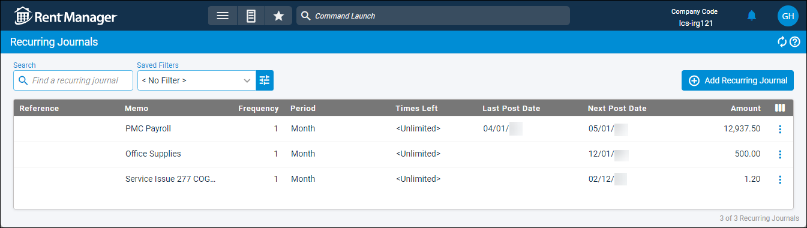

Source: https://rmxhelp.rentmanager.com/Topics/Express/CSH/Journals-Recurring.htm
Recurring Journals (Page)
Recurring journals are journal entries that are used on a recurring basis (daily, weekly, or monthly) to perform money transfers between general ledger (GL) accounts. Recurring journals are saved as templates and can be posted manually as often as needed or be configured to post automatically using Task Automation.
Related Privileges
| Group | Privilege | Column |
|---|---|---|
| Accounting | Recurring journals | View |
For more information, refer to Control User Access.
To review your recurring journals, go to  arrow_forward Accounting arrow_forward Journals arrow_forward Recurring Journals.
arrow_forward Accounting arrow_forward Journals arrow_forward Recurring Journals.

Column Descriptions
The following columns display on the page. By default, some columns display only by using  .
.
| Default Column | Description |
|---|---|
|
Reference |
A short note to identify the purpose of the journal entry. |
|
Memo |
A longer note to provide further information about the purpose of the journal entry transaction (e.g., Security Deposit Transfer). |
|
Frequency |
How often a new one-time journal should be posted from this template within the specified time Period. For example, 1 Month(s) means post once every month; 2 Month(s) means post once every two months; 3 Month(s) means post once every three months (quarterly). |
|
Period |
The time interval used in conjunction with Frequency. |
|
Times Left |
How many more times this recurring journal is set to be posted. |
|
Last Post Date |
The date the recurring journal was last posted. |
|
Next Post Date |
The next date the recurring journal is to be posted. This is calculated for you by applying one cycle of the Frequency–Period value to the date of the Last Post. For example, the Next Post Date of a recurring journal last posted on August 17 of this year with a one-month frequency would be September 17 of this year. |
|
Amount |
The dollar amount debited and credited in the journal entry. |
| Available Column | Description |
|
Automate |
A |
|
Basis |
The accounting method for how the journal entry affects financial reports. |
|
Created By |
The user who created the journal entry. |
|
Created Date |
The date on which the journal entry was created. |
|
Notification Email |
The email address of a user(s) that receives a notification for each successful or failed automatic posting. |
|
Period Adjustment |
A |
|
Properties |
The short names of each property impacted by the journal entry. |
|
Updated Date |
The date on which the journal entry was most recently updated and saved. |